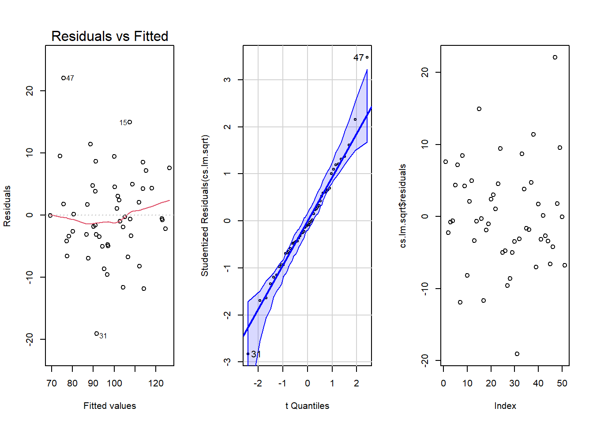

library(tidyverse)
library(car)
library(pander)
cs <- read_csv("~/Statistics-Notebook-master/Data/carsell.csv")ggplot(data = cs, mapping = aes(x = Mileage, y = Price)) +
geom_point(color = "skyblue") +
stat_function(fun = function(x) (bs[1] + bs[2] * x)^2, color = "orange") +
geom_point(data = bought, mapping = aes(x = Mileage, y = Price), color = "red", pch = 8) +
geom_point(data = sell, mapping = aes(x = Mileage, y = Price), color = "red", pch = 8) +
annotate(geom = "text", x = 80000, y = 10000, label = "Bought here") +
annotate(geom = "text", x = 165000, y = 7500, label = "Sell here") +
geom_segment(x = 99980, xend = 200000, y = 10000, yend = 6496.36, color = "red") +
theme_bw() + labs(title = "Correlation of Selling Price and Mileage of 2011 Honda Accord LX") +
geom_segment(aes(x = 99980, xend = 99980, y = (91.9222)^2, yend = (121.6137)^2), color = "green", lwd = 3, alpha = 0.01)From the data, we see that the transformed model fits the data reasonably well. The car was bought well below the predicted price or average price. When we look at the prediction interval, however, our buying price still falls within it. Below shows the prediction interval given that the car has a mileage of 99980.
pander(predict(cs.lm.sqrt, data.frame(Mileage = 99980), interval = "prediction"))| fit | lwr | upr |
|---|---|---|
| 106.8 | 91.92 | 121.6 |
We plan on selling the car at 200000 miles. If we sell the car at this mileage at the average price, this would then mean that on average we are losing 3 cents for every mile we drive the car. For every 100 miles, that would be $3.50. For 1000 miles, this would be $35. However, the further car is driven, the less we lose money for driving the car. We then can drive the car more without losing value and theoretically sell the car later. However, this isn’t practical, so 200000 miles was decided upon (see Appendix for details).
Because cars generally don’t follow a linear trend in depreciating value as the miles increase, it would be in our best interest to transform the data such that we find a non-linear model. We find the best transformation using the BoxCox method:
boxCox(cs.lm) As we can see, the log and square root transformations are both suggested. For the sake of novelty, we used the square root transformation.
The model of the regression is then given as follows: \(\underbrace{\hat{Y\prime_i}}_{\text{Predicted Price}} = 132.9 - .00026\underbrace{X_i}_{\text{Mileage}}\) Where \(Y\prime_i\) is a transformation.
We then replace \(\hat{Y\prime_i}\) with \(\sqrt{\hat{Y_i}}\), which was our transformation of choice. Solving for \(\hat{Y_i}\) then gives: \(\hat{Y_i} = (132.9 - .00026X_i)^2\).
To find the best time to sell the car, we want to find when we get the best price for the mileage. Theoretically, this would be best after many miles, where the slope our model \(\hat{Y_i} = (132.9 - .00026X_i)^2\) approaches 0, where price doesn’t diminish, but the mileage keeps going up. We can find when the slope reaches 0 by taking the derivative of our function which is given by \(y = 0.000000135x - 0.069108\). We then find when this function reaches zero, or in other words, we lose no money by continuing to drive. This is as \(x = 511154\), or 511154 miles. However, it is unusual to drive a car that many miles. Therefore, it would be best to sell it as late as reasonably possible. I would sell it at 200000 where someone would be inclined to buy it as it still has some “life” left in it.
To investigate if there is a significant relationship between the mileage of a car and the price, we will test the slope of the model to see if the car’s value changes as it is driven. A significance level of \(\alpha = 0.05\) will be used.
\(H_0: \beta_1 = 0\) \(H_a: \beta_1 \neq 0\)
For the test, we will be test the slope of the model.A significance level of \(\alpha = 0.05\) will be used.
pander(summary(cs.lm.sqrt))| Estimate | Std. Error | t value | Pr(>|t|) | |
|---|---|---|---|---|
| (Intercept) | 132.9 | 2.677 | 49.66 | 1.433e-43 |
| Mileage | -0.0002615 | 1.862e-05 | -14.05 | 8.337e-19 |
| Observations | Residual Std. Error | \(R^2\) | Adjusted \(R^2\) |
|---|---|---|---|
| 51 | 7.291 | 0.801 | 0.797 |
As we can see, the slope is significant, with a p-value of \(< 0.05\). We also see that we have a strong \(R^2\) of 0.801. This means that a large portion of variance in the data can be explained by the model.
To determine the validity of the model, we first check for linearity and constant variance. We see that the residuals have no apparent pattern and variance appears to be constant. We can then say that these assumptions have been met.
We then check the assumption that error terms are normally distributed. Since all the dots are close to the line and all but one falling outside of the shaded region, we will say that the assumption of normal error terms has been met.
Finally, we check independent error terms. There seems to be no apparent pattern in the data, so we say that this assumption has been met. Thus, all assumptions have been met and we can take the results of the analysis to be valid.
par(mfrow = c(1,3))
plot(cs.lm.sqrt, which = 1)
car::qqPlot(cs.lm.sqrt)## [1] 31 47plot(cs.lm.sqrt$residuals)